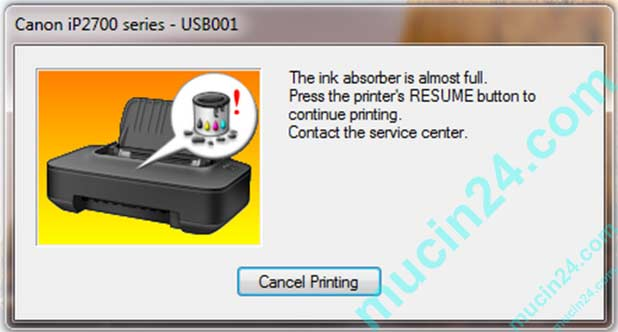
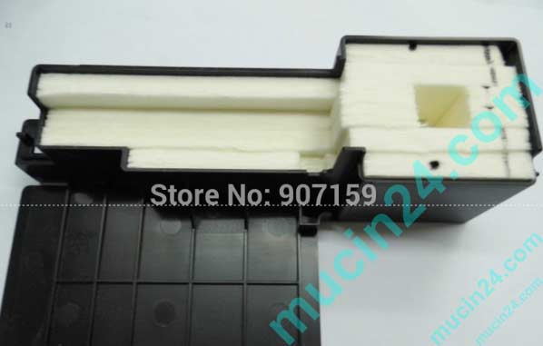
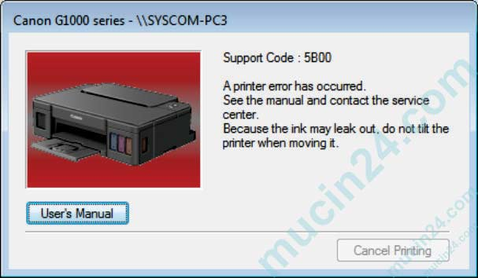
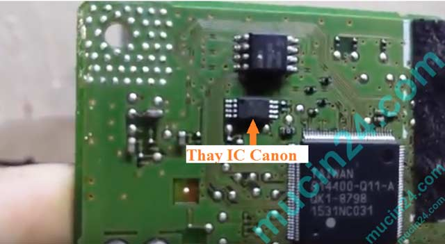
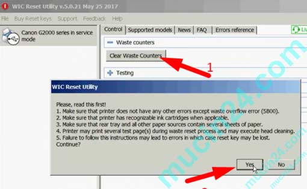
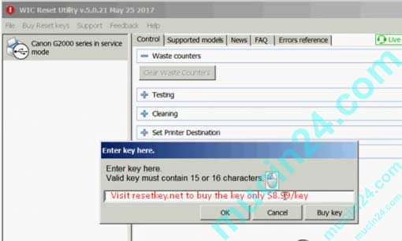

Reset Canon G1000-G2000-G3000 báo lỗi 5B00 tràn mực thải
Đặc điểm của hầu hết các dòng máy in phun của Epson hay Canon là khi người sử dụng đã thay mực máy in nhiều lần đạt tới một số lượng trang in nhất định. Tùy vào từng model máy in, thông thường khoảng trên 5 nghìn bản in thì máy sẽ báo lỗi tràn mực thải hay còn gọi là “hết đát”.

Tràn mực thải của máy in là như thế nào?
Do cấu tạo và nguyên tắc hoạt động của tất cả các loại máy in phun là sử dụng mực dạng lỏng, do đó để đảm bảo mực lúc nào cũng lên đều và không bị tắc nghẹn khi sử dụng. Mỗi khi khởi động, máy in sẽ tự động tiến hành hút một lượng mực nhất định ở đầu in và thải ra ngoài để đảm bảo đầu in sẽ lên mực đều và không bị nghẹn cục bộ ở đâu đó do mực bị khô lúc máy in không hoạt động.
Cứ mỗi lần khởi động máy in và tiến hành in ấn, máy in lại thải ra một lượng mực nhất định, và lượng mực thải này sẽ được đưa vào chứa trong các miếng mút xốp nằm bên trong máy in (lưu ý lượng mực thải ra này sẽ còn nhiều hơn nữa mỗi khi bạn tiến hành Clean đầu in, khi đầu in bị tắc mực).

Nhà sản xuất sẽ sử dụng một thuật toán nào đó để lập trình cho máy in tính toán lượng mực thải ra ngoài sau mỗi lần máy in khởi động và mỗi bản in ra. Máy in sẽ tự động đưa ra cảnh báo tràn mực thải khi máy in đã đạt tới một số lượng bản in nhất định tùy vào từng model máy in. Khi máy in đã đưa ra cảnh báo tràn mực thải, thì có nghĩa là các miếng mút xốp nằm trong máy in đã thấm đầy mực, và sắp tràn ra máy in nếu bạn tiếp tục in, do đó bạn sẽ không thể tiếp tục in ấn hay làm gì cả cho tới khi máy in được Reset bộ đếm mực thải.
Dấu hiệu nhận biết máy in bị tràn mực thải hay tràn nhớ- tràn bộ đếm mực
Với mỗi loại máy in thì lỗi này sẽ hiển thị một cách khác nhau, thông thường thì trên máy in sẽ có các đèn báo màu vàng và màu cam nháy đuổi nhau liên tục, còn trên máy tính thì sẽ xuất hiện các dòng thông báo lỗi dạng như sau: “The Ink absorber is almost full” ,”A printer’s ink pad is the end of its service life“, “Support Code 5B00” hay rất nhiều bạn hay đọc nhầm là “5800“.

Các dòng máy in phun của Epson như T50, T60, 1390 hay L300, L310, L360, L800, L805 hay Canon IX 6770, IX6780, IX 6560, IP 2770 thì dấu hiệu nhận biết là đèn đỏ và đèn xanh trên máy sẽ nhấp nháy đuổi nhau liên tục.
Máy in phun dòng G của Canon như Canon G1000, Canon G2000, Canon G3000 khi bị tràn mực thải hay tràn bộ đếm mực sẽ có biểu hiện như sau:
- Trên máy đèn nguồn màu xanh lá cây và đèn báo lỗi màu cam sẽ nhấp nháy đuổi nhau 7 lần rồi tiếp lại lặp lại chu kỳ, bạn cứ đếm số lần nhấp nháy của mỗi màu là 7 lần thì chắc chắn máy đã bị tràn bộ đếm mực thải.
- Trên màn hình máy tính khi bạn ra lệnh in sẽ xuất hiện thông báo lỗi “Support Code 5B00“, “The Ink absorber is almost full“.
Cần phải làm gì khi máy in báo lỗi tràn mực thải – tràn bộ đếm mực- tràn nhớ- 5B00
Theo quy định của các nhà sản xuất máy in như Epson, Canon hay Brother thì khi máy in đã báo lỗi tràn mực thải có nghĩa là chiếc máy đó đã “hết đát” và bạn nên mua một chiếc máy in mới để sử dụng do đó họ sẽ không chịu trách nhiệm bảo hành cho lỗi này.
Nhưng đứng ở phương diện người sử dụng khi mà máy in của bạn vẫn còn mới đét, vẫn còn sử dụng tốt lắm, thì phải có cách gì để sử dụng được tiếp cho khỏi lãng phí chứ nhỉ?

Câu trả lời là có cách, đó chính là tháo máy in ra vệ sinh hết mực thải chứa trong các miếng mút nằm bền trong máy in và sử dụng phần mềm để reset lại bộ đếm mực thải của máy in đưa máy in trở lại tình trạng mới như ban đầu. Còn một cách nữa là thay thế con chip nhớ ROM trên main Fomater của máy in, nhưng cách này phức tạp hơn và phải can thiệp vào phần cứng (Chúng tôi khuyến cáo là các bạn không nên làm cách này).
Reset bộ đếm mực thải Canon G1000-G2000-G3000
Trung tâm mực in iNNO hoàn toàn có thể Reset các máy in của Canon như Canon G1000, Canon G2000, Canon G3000, Canon IX 6770, IX6560, IP2770 khi chúng báo lỗi 5B00 tràn mực thải về trạng thái như ban đầu, bằng một phần mềm được cung cấp miễn phí tên là WIC Reset (chắc phần mềm này là do ông WIC viết ra :D).
Xem thêm: Reset máy in Epson L310- L360-L805 tràn mực thải
Nhưng mỗi lần Reset bạn phải chi một số tiền nhỏ khoảng ~10$ để mua Key Reset và được cung cấp một dãy số như thẻ cào điện thoại trả trước, sau đó bạn sẽ nhập Key Reset vừa được cung cấp này vào để kích hoạt phần mềm Reset. Cách làm cụ thể sẽ được trình bày trong các bước sau:
-
Bước 1: Cài đặt phần mềm WIC Reset
– Chuẩn bị một máy tính nối mạng và đã kết nối máy in cần Reset với máy tính bằng cáp USB
– Tắt hết các chương trình diệt Virus vì có thể chúng sẽ xóa phần mềm WIC Reset khi bạn tải về máy tính.
– Tải về máy tính phần mềm WIC Reset tại đây, sau đó tiến hành cài đặt WIC Reset trên máy tính của bạn. -
Bước 2: Đưa máy in vào trạng thái Service Mode
Đưa máy in của bạn về trạng thái Service Mode bằng cách:
– Tắt máy in
– Nhấn và giữ phím RESET của máy in
– Nhấn và giữ phím POWER đồng thời với giữ phím RESET của máy in.
– Thả phím RESET của máy in, trong khi vẫn nhấn nút POWER
– Nhấn phím RESET của máy in lặp đi lặp lại 5 lần
– Thả phím POWER của máy in
– Máy in đã ở trong trạng thái Service Mode, khi ở trong chế độ này máy tính sẽ thông báo phát hiện thiết bị mới, khi máy tính báo Found New Hardware bạn đợi khoảng 20 giây sau đó bạn click vào nút Cancel -
Bước 3: Sử dụng phần mềm WIC Reset Ultility để clear counter (bộ đếm)
Click vào shotcut trên màn hình desktop để khởi chạy phần mềm WIC Reset Utility, phần mềm này sẽ tìm và nhận diện đúng model của máy in đang kết nối với máy tính và hiển thị tên ở bên trái như trong hình, nhìn vào phần bên phải màn hình bạn sẽ thấy nút “Clear Waste Counters” ==> Click vào sau đó một cửa sổ sẽ hiện lên => bạn tiếp tục chọn [Yes].

-
Bước 4: Nhập Key Reset
– Bạn phải chuẩn bị trước một mã Key Reset bằng cách mua, hay xin, hay gì gì đó…:D, hoặc gọi ngay 0908 327123 để mua mã.
– Sau khi có Key Reset rồi bạn nhập Key vào rồi Click vào [OK]

-
Bước 5: Thông báo chúc mừng bạn đã Reset mày in thành công
– Nếu bạn thực hiện đầy đủ các bước như trên và Key Reset của bạn là đúng thì sau khi thực hiện xong bước 4, máy tính sẽ hiện lên dòng thông báo về việc bạn đã Reset thành công “Congratulations” => Bạn đã Reset thành công máy in lại in bình thường rồi đấy!
– Nếu không thấy thông báo gì thì có nghĩa là bạn chưa thực hiện đúng => Kiểm tra lại các bước và Key Reset
Sau mỗi lần Reset máy in thì dùng được bao lâu? máy in có còn báo 5B00 nữa không?
Trên mỗi máy in có một con chip nhớ ROM để thực hiện việc lưu số lượng bản in và số mực thải của máy in trong quá trình sử dụng, khi con chip này đầy bộ nhớ hay còn gọi là tràn nhớ, thì máy in sẽ báo lỗi 5B00 hay tràn mực thải.
Do đó sau mỗi lần Reset máy in hay thực chất là Clear bộ đếm trong chip nhớ của máy in về 0, thì sau khi sử dụng một thời gian và sau một số lượng bản in nhất định khoảng trên 5000 bản in thì bộ nhớ trên con chip nhớ này tiếp tục bị đầy và bạn lại phải tiến hành Reset máy in như ở trên nếu muốn tiếp tục sử dụng.
Nếu bạn in ấn nhiều, hay bạn làm dịch vụ in chẳng hạn thì sau khi Reset mực thải máy in lần đầu tiên, bạn nên tiến hành đưa đường dẫn mực thải ra bên ngoài máy, cách này tuy nhìn không được gọn gàng lắm nhưng sẽ làm cho máy in của bạn bền và sạch sẽ hơn, bởi vì mực thải đã được dẫn ra bên ngoài chứ không còn chứa trong các miếng mút nằm bên trong máy nữa.
Nguồn: mucin24
Bạn cần nạp mực máy in Tân Phú, Nạp mực máy in Bình Tân, Nạp mực máy in Tân Bình, Q3, quận 6.. hoặc reset các dòng máy Epson, Canon hãy gọi:
Hotline: 0908327123
Tel : 028 6271 1252 – Fax : 028 225.347.46
Website: www.napmucnhanh24h.com
Không tự khắc phục được? Mực In Trường Phát nhận sửa máy in tận nơi TP.HCM 24/7 – kỹ thuật có mặt trong ngày, báo giá trước khi sửa, bảo hành 1 tháng. Hotline 0908.327.123 (Zalo). → Xem dịch vụ sửa máy in tận nơi.
Cần nạp mực hoặc sửa máy in tận nơi? Mực In Trường Phát có mặt trong 30 phút tại TP.HCM — in test trước khi tính tiền, bảo hành 1 tháng.
0908.327.123 · 0819.007.394 (Zalo cả 2 số)